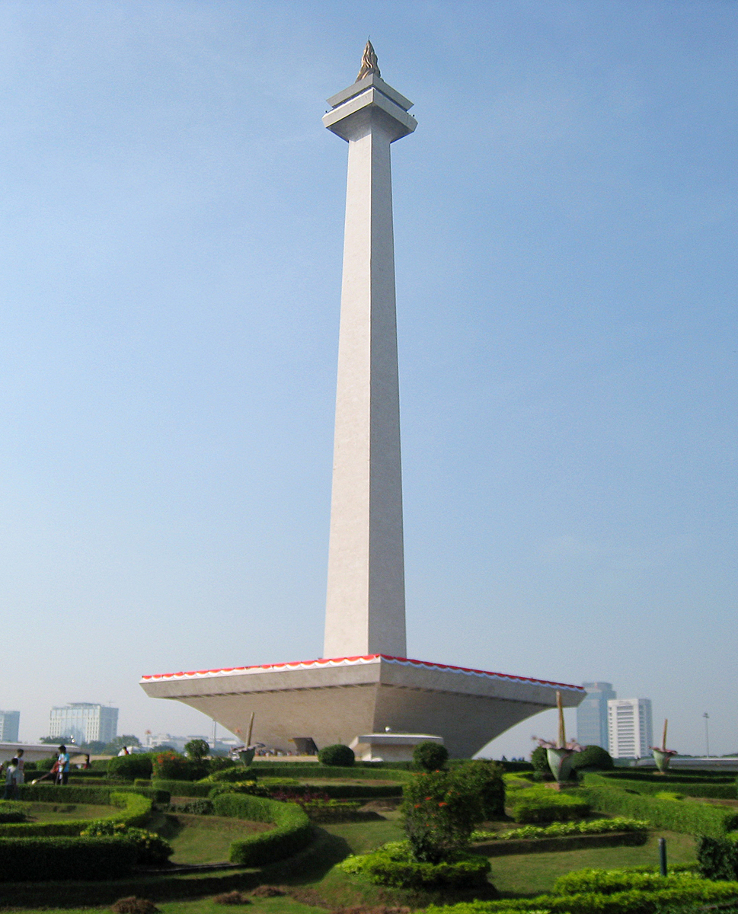
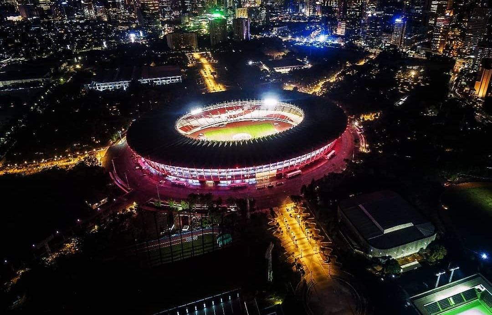

Sumatra
Nusa Tenggara
Maluku
Papua
DKI Jakarta
Jakarta atau secara resmi bernama Daerah Khusus Ibukota Jakarta adalah ibu kota negara dan kota terbesar di Indonesia. Menurut sistem pembagian administratif Indonesia, Jakarta merupakan provinsi dengan status daerah khusus. Sementara menurut pengertian secara umum, Jakarta merupakan kota metropolitan. Jakarta terletak di pesisir bagian barat laut Pulau Jawa. Dahulu pernah dikenal dengan beberapa nama di antaranya Sunda Kelapa, Jayakarta, dan Batavia. Jakarta juga mempunyai julukan The Big Durian karena dianggap kota yang sebanding New York City (Big Apple) di Indonesia. Jakarta memiliki luas sekitar 664,01 km² (lautan: 6.977,5 km²), dengan penduduk berjumlah 10.562.088 jiwa (2020). Wilayah metropolitan Jakarta (Jabodetabek) yang berpenduduk sekitar 28 juta jiwa.
Sebagai pusat bisnis, politik, dan kebudayaan, Jakarta merupakan tempat berdirinya kantor-kantor pusat BUMN, perusahaan swasta, dan perusahaan asing. Kota ini juga menjadi tempat kedudukan lembaga-lembaga pemerintahan dan kantor sekretariat ASEAN. Jakarta dilayani oleh dua bandar udara, yakni Bandara Soekarno–Hatta dan Bandara Halim Perdanakusuma, serta tiga pelabuhan laut di Tanjung Priok, Sunda Kelapa, dan Ancol.
Informasi Umum
| Nama Provinsi | Kode Wilayah | Kode Internasional | Singkatan Umum | Ibu Kota | Hari Libur | Lambang |
|---|---|---|---|---|---|---|
| Daerah Khusus Ibukota Jakarta | 31 | ID-JK | DKI Jakarta | TIdak ada | 22 Juni 1527 |  |
Budaya
Rumah kebaya adalah sebuah nama rumah adat suku Betawi. Disebut dengan rumah kebaya dikarenakan bentuk atapnya yang menyerupai pelana yang dilipat dan apabila dilihat dari samping maka lipatan-lipatan tersebut terlihat seperti lipatan kebaya. Selain Rumah Kebaya, suku Betawi juga memiliki rumah adat lainnya, seperti Rumah Gudang, Rumah Joglo, dan Rumah Panggung. Ciri khas dari rumah ini adalah rumah ini memiliki teras yang luas yang berguna untuk menjamu tamu dan menjadi tempat bersantai keluarga. Pada zaman dahulu, masyarakat betawi membuat sumur di depan rumahnya dan pemakaman yang berada disamping rumah. Dan, dinding rumahnya terbuat dari panel-panel yang dapat dibuka dan digeser-geser ke tepinya. Hal ini dimaksudkan agar rumah terasa lebih luas.
Baju adat Betawi tersendiri yang dikenal dengan nama Sadariah. Baju Sadariah terdiri dari baju koko warna putih dengan celana longgar bermotif batik parang. Komprang, demikian nama celana tersebut karena potongannya longgar. Pakaian adat Betawi untuk pria ini juga dilengkapi dengan cukin, sebutan untuk kain yang diselempangkan di leher seperti syal. Cukin bisa berupa kain sarung atau kain bermotif batik betawi dihiasi gambar ondel-ondel hingga Monas. Sementara itu, alas kaki yang dipakai biasanya berupa sandal terompah.
Tari Cokek merupakan tarian yang berasal dari budaya Betawi tempo dulu. Dewasa ini orkestra (gambang kromong) biasa digunakan untuk mengiringi pertunjukan tarian, seperti tari Sembah Nyai, Sirih Kuning dan sebagainya, di samping sebagai pengiring tari pergaulan yang disebut tari cokek. Tari cokek ditarikan berpasangan antara laki-laki dan perempuan. Tarian khas Tangerang ini diwarnai budaya Tionghoa, penarinya mengenakan kebaya yang disebut cokek. Tarian cokek mirip sinetron dari Cirebon atau sejenis ronggeng di Jawa Tengah. Tarian ini kerap identik dengan keerotisan penarinya.

Tari Saman merupakan salah satu media untuk menyampaikan pesan atau dakwah. Tarian ini mencerminkan pendidikan, keagamaan, sopan santun, kepahlawanan, kekompakan dan kebersamaan.

Tari Seudati adalah salah satu tarian tradisional yang berasal dari daerah Aceh. Tarian ini biasanya ditarikan oleh sekelompok penari pria dengan gerakannya yang khas dan enerjik serta diiringi oleh lantunan syair dan suara hentakan para penari.
Bahasa Betawi atau Bahasa Melayu Betawi adalah bahasa yang dituturkan oleh suku Betawi yang mendiami daerah Jakarta dan sekitarnya. Bahasa ini merupakan bahasa Melayu Pasar yang bercampur dengan bahasa asing, seperti; Belanda, Portugis, Arab, Farsi, Hokkien, dan juga bahasa pribumi Indonesia seperti Sunda, Jawa, dan Bali; imbas para imigran dan pekerja multietnis yang didatangkan dari berbagai tempat ke Batavia oleh VOC pada abad ke-16 hingga abad 18, serta perdagangan dan pertukaran yang terjadi sejak ratusan tahun di bandar besar Sunda Kalapa.

Palang Pintu merupakan tradisi yang menjadi bagian dari upacara pernikahan masyarakat Betawi. Palang pintu menggabungkan seni beladiri dengan seni sastra pantun. Dalam tradisi ini, jawara yang bertindak sebagai perwakilan mempelai laki-laki dan perempuan akan saling menunjukan kemampuan memperagakan gerakan silat dan melontarkan pantun satu sama lain.[1] Setelah menunjukkan beberapa gerakan silat dan saling berbalas pantun, baru rombongan mempelai pria bisa masuk ke area rumah mempelai perempuan untuk melanjutkan prosesi pernikahan.
Tradisi palang pintu menyimbolkan ujian yang harus dilalui mempelai laki-laki untuk meminang pihak perempuan. Jawara dari daerah asal laki-laki harus bisa mengalahkan jawara yang berasal dari daerah tempat tinggal perempuan. Hal ini sesuai dengan pelaksanaannya di mana rombongan mempelai laki-laki harus melewati hadangan tantangan yang diberikan oleh pihak perempuan. Sementara itu, berbalas pantun dimaknai sebagai manifestasi dari diplomasi. Palang Pintu juga berfungsi untuk mendekatan hubungan antarkampung dan antarkeluarga.
Golok adalah pisau besar terbuat dari besi atau baja yang digunakan untuk membelah atau memotong. Golok kerap digunakan sebagai alat berkebun oleh masyarakat Indonesia. Hingga saat ini golok masih umum digunakan sebagai senjata dalam seni bela diri silat.
Golok adalah pisau besar terbuat dari besi atau baja yang digunakan untuk membelah atau memotong. Golok kerap digunakan sebagai alat berkebun oleh masyarakat Indonesia. Hingga saat ini golok masih umum digunakan sebagai senjata dalam seni bela diri silat.
Lagu Kicir-Kicir ini sebenarnya muncul dari tradisi pantun nusantara, terutama pengaruh dari pantun melayu dan syair. Hal tersebut terlihat dari lirik lagu ini yang terikat oleh rima, jumlah suku kata, dan larik persis seperti pantun dan syair. Pada larik pertama dan kedua di setiap baitnya berisi sampiran dan di dua larik selanjutnya terdapat isi. Hal inilah yang menandakan bahwa lagu ini merupakan pengembangan dari bentuk pantun dan syair. Budaya Betawi memang erat kaitannya dengan budaya Melayu dan China.
Kuliner
Kerak telur adalah makanan asli daerah Jakarta, dengan bahan-bahan beras ketan putih, telur ayam atau bebek, ebi yang disangrai kering ditambah bawang merah goreng, lalu diberi bumbu yang dihaluskan berupa kelapa sangrai, cabai merah, kencur, jahe, merica butiran, garam dan gula pasir. Kerak telor dapat ditemukan pada hari biasa. Anda bisa menemukan kerak telor di sekitar Kota Tua, Jakarta Barat. Menurut sejarah, Kerak Telor sudah ada dari zaman kolonial Belanda, kerak telor diciptakan oleh masyarakat Betawi secara tak sengaja Pada tahun 1970-an.

Selain itu Soto Betawi merupakan soto yang khas dari daerah DKI Jakarta. Seperti halnya Soto Madura dan Soto Sulung, soto Betawi juga menggunakan jeroan. Selain jeroan, sering kali organ-organ lain juga disertakan, seperti mata, terpedo, dan juga hati. Daging sapi juga menjadi bahan campuran dalam soto Betawi. Kuah soto Betawi merupakan campuran santan dan susu. Kedua campuran inilah yang membuat rasa soto Betawi begitu khas.

Destinasi Wisata
Monumen Nasional atau yang disingkat dengan Monas atau Tugu Monas adalah monumen peringatan setinggi 132 meter yang terletak tepat di tengah Lapangan Medan Merdeka, Jakarta Pusat. Monas didirikan untuk mengenang perlawanan dan perjuangan rakyat Indonesia dalam merebut kemerdekaan dari pemerintahan kolonial Kekaisaran Belanda. Pembangunan dimulai pada 17 Agustus 1961 di bawah perintah presiden Soekarno dan diresmikan hingga dibuka untuk umum pada 12 Juli 1975. Tugu ini dimahkotai lidah api yang dilapisi lembaran emas yang melambangkan semangat perjuangan yang menyala-nyala dari rakyat Indonesia.
Monumen Nasional atau yang disingkat dengan Monas atau Tugu Monas adalah monumen peringatan setinggi 132 meter yang terletak tepat di tengah Lapangan Medan Merdeka, Jakarta Pusat. Monas didirikan untuk mengenang perlawanan dan perjuangan rakyat Indonesia dalam merebut kemerdekaan dari pemerintahan kolonial Kekaisaran Belanda. Pembangunan dimulai pada 17 Agustus 1961 di bawah perintah presiden Soekarno dan diresmikan hingga dibuka untuk umum pada 12 Juli 1975. Tugu ini dimahkotai lidah api yang dilapisi lembaran emas yang melambangkan semangat perjuangan yang menyala-nyala dari rakyat Indonesia.
